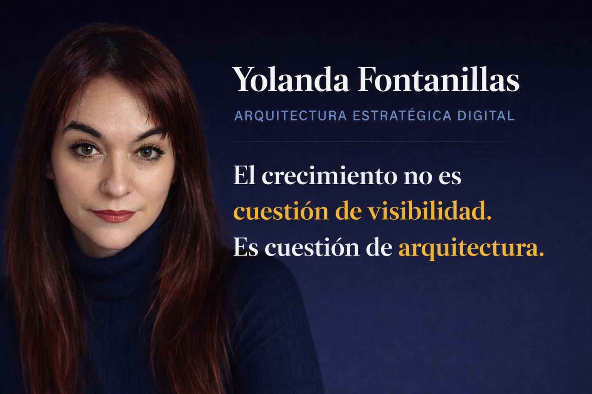

Presentación
Arquitecta de Marketing Digital
Diseño estructuras digitales orientadas a conversión para emprendedores y pequeñas empresas.
Creo sistemas que permiten comunicar el valor de un negocio, atraer clientes y convertir la presencia digital en una herramienta estratégica.
Integro desarrollo web, SEO, contenido y experiencia de usuario dentro de una arquitectura digital coherente.
Utilizo inteligencia artificial para optimizar procesos, automatizar tareas y mejorar resultados.